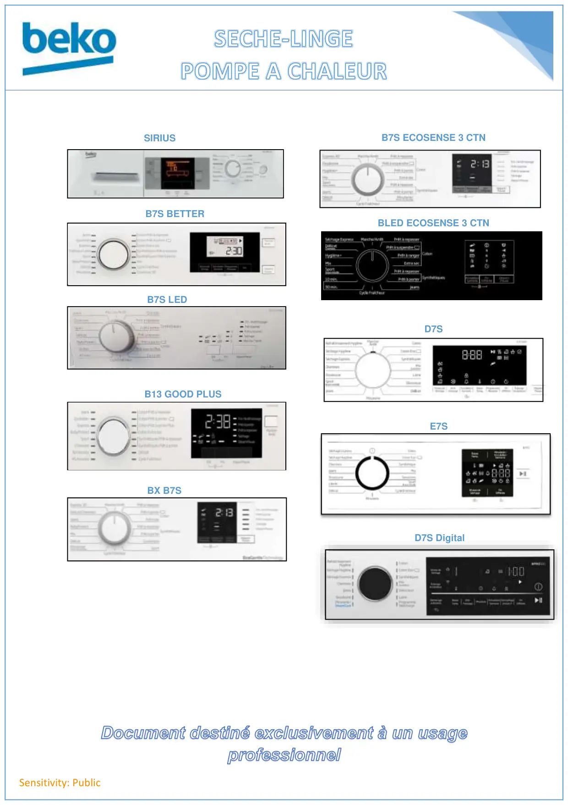

Document destiné exclusivement à un usageprofessionnelSensitivity: PublicSIRIUSB7S LEDB7S BETTERB13 GOOD PLUSBX B7SB7S ECOSENSE 3 CTNBLED ECOSENSE 3 CTND7SE7SD7S Digital
1 / 1Liens de ce document (10)
PDFProgrTest seche linge DPU BEKO11 p.PDFMode test DE9331 afficheur leds B7S2 p.PDFProgr Test seche linge PAC BDS8033W2 p.PDFProgrTest g998H22 DS8333 PAC afficheur digital2 p.PDFProg Test PAC B7S BELD SLP10WS24 p.PDFProg Test seche linge PAC Ecosense 3CTN4 p.PDFProg Test seche linge PAC Ecosense BLED2 p.PDFProg Test seche linge PAC Elec D7S3 p.PDFProg Test seche linge Electronique E73 p.PDFProg Test seche linge D7S Digital Display3 p.